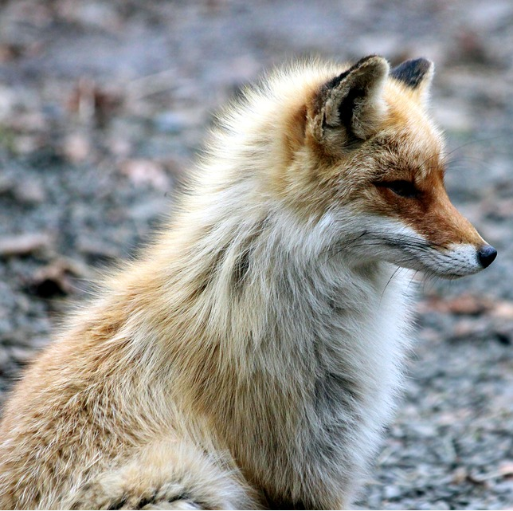

Hello and welcome
The purpose
The purpose of this protype/draft is to present an idea of the structure and design and to serve as a demonstration and example of content, accesibility and responsiveness.
The website is optimized both for desktop and mobile devices.
Behind the scenes, the objective from the get go was to have semantically correct markup, facilitating ease of access (accesibility) while also leaving room for future expansion.
The APIs
I decided to implement three APIs, and they all show different ways your API could be presented to the end user.
The first API implemented immediatelly show a random picture of a fox and a button to request a new picture.
The second API implements a live view of Västtrafik's different vehicles (busses, trams, trains and boats) painted as a dots ontop of a canvas. The canvas has a (for now) static map image of a part of Gothenburg. This implementation could be expanded with the ability zoom and pan around a real map.
Last but not least, I have implemented an interactive presentation of our Solar System's star and planets. Clicking on the planets or the sun will display a pop-up window with information requested from the third API.